19/10/2020 — Tắc mạch vành cấp thấy được trên điện tâm đồ có tạo nhịp *và* không tạo nhịp
Bản dịch tiếng Việt của bài "Acute coronary occlusion seen in paced *and* non-paced ECGs" – Dr. Smith’s ECG Blog. Giữ nguyên toàn bộ 13 hình ảnh của bản gốc.
Bài này do Brooks Walsh @BrooksWalsh, một bác sĩ cấp cứu ở Connecticut, viết.
Một điện tâm đồ tạo nhịp
Gia đình của một người bệnh rất cao tuổi đã gọi đội cấp cứu ngoài viện (EMS) khi người bệnh bị khó thở. Bệnh nhân có nhiều bệnh đồng mắc, trong đó có một máy tạo nhịp.
EMS đã ghi một số điện tâm đồ, trong đó có bản này:

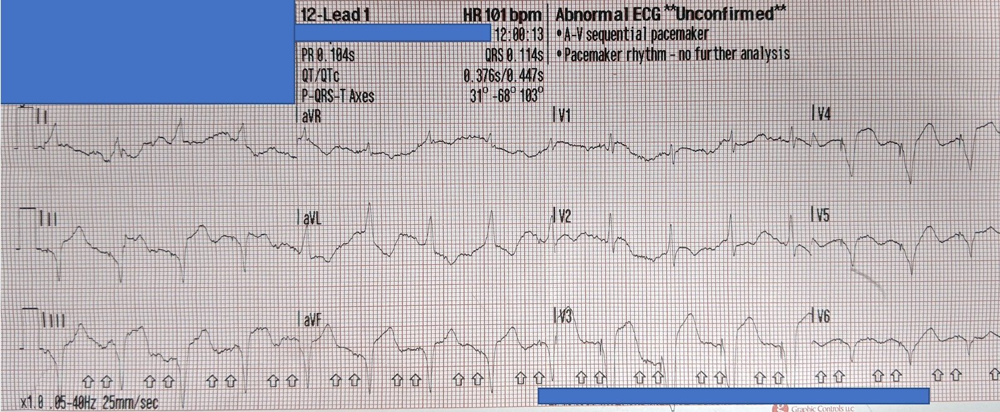
Liệu có thể biện minh cho việc kích hoạt phòng thông tim (cath lab) với điện tâm đồ này không?
Vâng, có, lẽ ra phải kích hoạt!
Các tiêu chuẩn Sgarbossa kinh điển và Sgarbossa cải biên để xác định nhồi máu cơ tim cấp trong bối cảnh nhịp tạo nhịp (paced rhythm) có lẽ đã được độc giả của blog này nắm khá rõ. Điện tâm đồ này minh họa tuyệt vời cho các quy tắc đó, đặc biệt là tiêu chuẩn: ST chênh lên vượt quá 20-25% độ sâu sóng S (“ngược hướng quá mức” (excessive discordance)) gợi ý tắc mạch vành cấp.
Chúng ta thấy điều này ở chuyển đạo V3, nơi đoạn ST của phức bộ QRS đầu tiên cao khoảng 3,6 mm, còn sóng S sâu 13,7 mm – cho tỷ số 0,26. Có một ít trôi đường nền đáng tiếc, nhưng tỷ lệ này cũng giữ nguyên ở phức bộ thứ 3. (Phức bộ thứ hai không diễn giải được, vì sóng S chạy ra ngoài giấy).

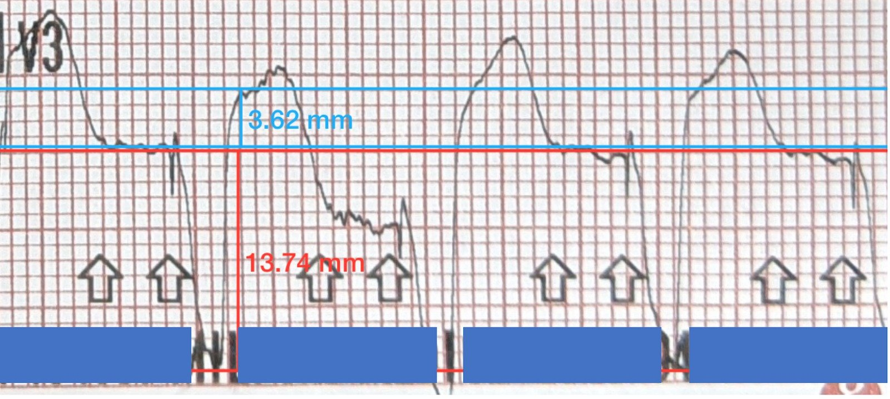
Chuyển đạo III cho thấy tình trạng ngược hướng quá mức tương tự, với nhát thứ ba cho tỷ số 3,5/11,7, tức 0,29. Nhát thứ tư (3,5/10,4 = 0,33) bị biến dạng nhưng vẫn có giá trị chẩn đoán.

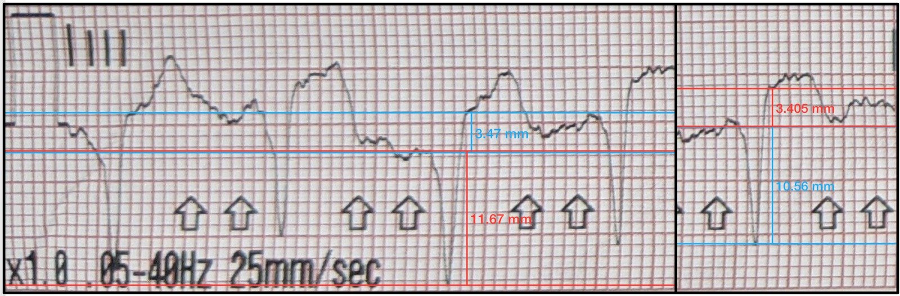
Ngoài ra, đoạn ST ở V2 gợi ý ST chênh lên (STE) đồng hướng > 1 mm (ở các nhát #2 và #3), nhưng trôi đường nền ở đây làm điều này kém chắc chắn hơn.

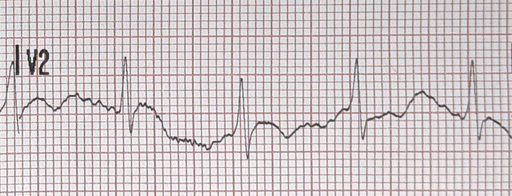
Vậy, các quy tắc này có dự đoán đúng một trường hợp tắc mạch vành không?
Mặc dù ca này không được chụp mạch vành, vẫn có đủ bằng chứng để “chứng minh” một cách hợp lý tình trạng tắc mạch vành cấp. Trước hết, nhân viên cấp cứu ngoài viện đã ghi một điện tâm đồ khác khoảng 10 phút trước đó:

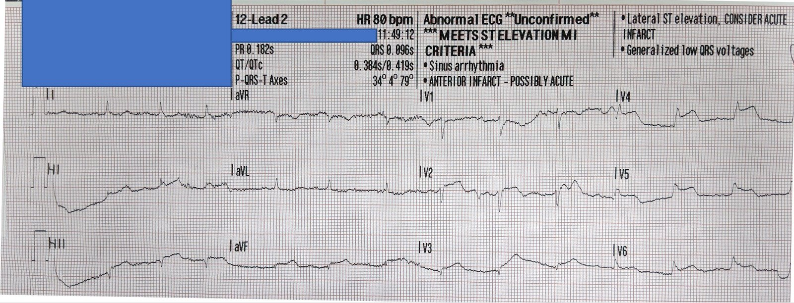
Điện tâm đồ không tạo nhịp này cho thấy ST chênh lên ở các chuyển đạo dưới và trước-bên, cùng với ST chênh xuống ở aVL, gợi ý tổn thương LAD “vòng qua mỏm” (wrap-around).
Điện tâm đồ không tạo nhịp ghi sau đó tại khoa cấp cứu (ED) cũng tương tự:

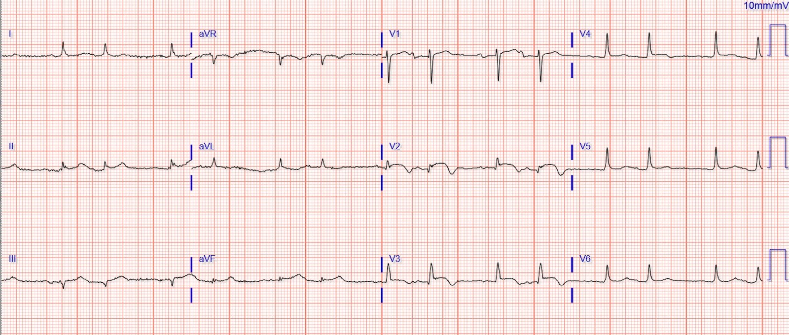
Điện tâm đồ này khác biệt rõ rệt so với một điện tâm đồ ghi 1 năm trước:

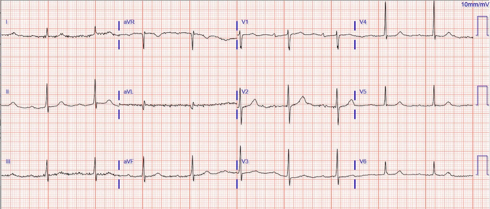
Sau khi được bác sĩ cấp cứu và bác sĩ can thiệp đánh giá, và sau khi thảo luận với bệnh nhân và gia đình, người ta đã không tiến hành chụp mạch vành cũng như tiêu sợi huyết bằng thuốc (bệnh nhân đã rất cao tuổi và suy kiệt).
Mặc dù không chụp mạch vành, tình trạng tắc cấp LAD vẫn được các xét nghiệm khác ủng hộ. Troponin ban đầu là 2,3 ng/ml (< 0,01), tăng lên 4 ng/ml khoảng 10 giờ sau đó. Bệnh nhân bị tụt huyết áp và có dấu hiệu suy tim sung huyết (CHF). Siêu âm tim cho thấy rối loạn chức năng tâm thu nặng, với vô động ở mỏm, đoạn giữa thành trước, đoạn giữa thành trước-bên, đoạn giữa thành dưới-vách, đoạn giữa thành trước-vách và đoạn giữa thành dưới-bên (siêu âm tim trước đây bình thường so với tuổi).

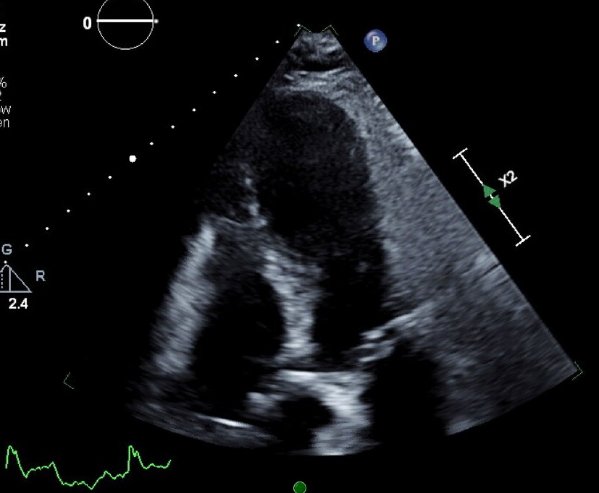
Cuối cùng, một điện tâm đồ ghi vào ngày hôm sau cho thấy sóng T ở thành bên đang tiến triển, càng ủng hộ tình trạng tắc cấp.

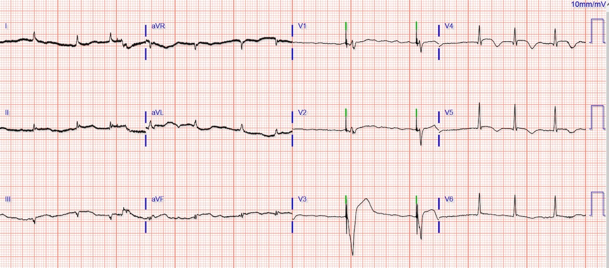
Nghiên cứu PERFECT [Từ Nhóm nghiên cứu Điện tâm đồ tạo nhịp cần điều trị mạch vành cấp cứu nhanh (Paced ECG Requiring Fast Emergent Coronary Therapy – PERFECT)]
Thử nghiệm PERFECT sẽ cho thấy tắc mạch vành cấp có thể được dự đoán một cách tin cậy từ điện tâm đồ tạo nhịp, bất chấp quan niệm phổ biến rằng điện tâm đồ tạo nhịp là “không thể diễn giải”. Thử nghiệm đó dùng dữ liệu chụp mạch vành, nên ca này (dù có bằng chứng gián tiếp tốt) sẽ không đáp ứng tiêu chuẩn đưa vào. Hy vọng phương pháp nghiên cứu chặt chẽ có thể thay đổi những quan điểm lỗi thời của các bác sĩ cấp cứu và bác sĩ tim mạch!
Nghiên cứu hiện đang được chỉnh sửa để gửi Annals of Emergency Medicine.
Dưới đây là phần Kết quả và Kết luận của bản tóm tắt, đã được đăng trên AEM và trình bày tại SAEM năm 2018. Annals đề nghị chúng tôi xem xét thêm những bệnh nhân bị nhồi máu cơ tim cấp (AMI) nhưng không có tắc mạch (Non-OMI). Chúng tôi không nghĩ điều đó thật sự liên quan, nhưng tin rằng nó chỉ càng củng cố thêm kết quả. Chúng tôi sắp hoàn tất phân tích đó và sau đó sẽ nộp lại.
Chúng tôi đã trình bày nghiên cứu tại SAEM 2018. Đây là kết quả ở dạng đã điều chỉnh. Tôi không công bố toàn bộ bản tóm tắt, vì hy vọng nó sẽ được xuất bản trong tương lai.
Chẩn đoán tắc mạch vành cấp trên điện tâm đồ ở nhịp tạo nhịp thất bằng tiêu chuẩn Sgarbossa cải biên theo Smith.
Kết quả: Có 59 đối tượng OMI và 102 đối tượng chứng (tuổi trung bình 73; nam 103 [64%]). Độ nhạy và độ đặc hiệu của tiêu chuẩn Sgarbossa cải biên (MSC) so với tiêu chuẩn Sgarbossa gốc (OSC) đối với OMI lần lượt là 81% (KTC 95% 69-90) so với 56% (KTC 95% 42-69; P<.001) và 96% (KTC 95% 90-99) so với 97% (KTC 95% 92-99). Bổ sung ST chênh xuống đồng hướng ở V4-V6 vào MSC cho độ nhạy 86% (KTC 95% 75-94). Đối với thành phần ngược hướng quá mức, tỷ số đã nhận diện được 17 bệnh nhân OMI so với 2 bệnh nhân khi dùng ngưỡng ST chênh lên tuyệt đối 5mm.
Kết luận: Để chẩn đoán OMI khi có nhịp tạo nhịp thất (VPR), MSC nhạy hơn OSC; độ đặc hiệu tương đương.

===================================
BÌNH LUẬN CỦA TÔI, bởi KEN GRAUER, MD (19/10/2020):
===================================
Một ca quan trọng của Dr. Walsh, bổ sung vào bộ sưu tập ngày càng lớn của chúng tôi gồm những ca OMI vẫn hiện rõ dù có máy tạo nhịp (Gần đây nhất — Xem bài ngày 5 tháng Mười năm 2020 của chúng tôi trên Dr. Smith’s ECG Blog).
- Tôi giới hạn bình luận của mình trong ca hôm nay ở hai bản ghi 12 chuyển đạo do đội EMS ghi. Tôi muốn bắt đầu (như Dr. Walsh đã làm) — bằng cách tập trung vào điện tâm đồ thứ 1 ở trên (mà tôi đã đưa lại trong Hình 1). Dr. Walsh đã đặt câu hỏi MẤU CHỐT về điện tâm đồ này = “Liệu có thể biện minh cho việc kích hoạt phòng thông tim dựa trên điện tâm đồ #1 không?”

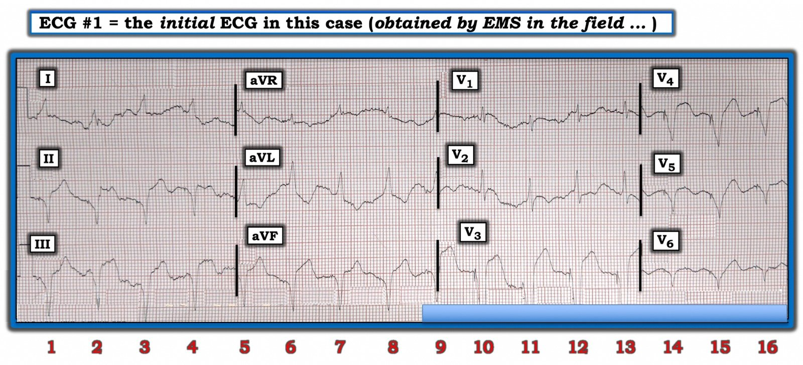
Hình 1: Điện tâm đồ thứ 1 ở trên trong ca hôm nay. Để rõ ràng — tôi đã đánh số các nhát bóp (Xem phần chữ).
SUY NGHĨ CỦA TÔI VỀ ĐIỆN TÂM ĐỒ #1:
Như Dr. Walsh đã nêu, khi có triệu chứng (tức là khó thở cấp) mới xuất hiện ở bệnh nhân cao tuổi này — các dấu hiệu trên điện tâm đồ #1 ít nhất cũng biện minh cho việc cân nhắc nghiêm túc kích hoạt phòng thông tim. Tôi xin bổ sung những suy nghĩ sau vào các điểm đã được nhấn mạnh trong phần bàn luận xuất sắc của Dr. Walsh:
- ĐIỂM #1: Như đã nhấn mạnh trong “Điểm then chốt (Pearl) #1” ở Bình luận của tôi cho bài ngày 11 tháng Mười năm 2020 trên Dr. Smith’s ECG Blog — có tới 30% tổng số bệnh nhân nhồi máu cơ tim cấp KHÔNG đau ngực. Trong số những bệnh nhân “nhồi máu cơ tim thầm lặng” này — triệu chứng không phải đau ngực thường gặp nhất đi kèm nhồi máu cơ tim cấp (đặc biệt ở bệnh nhân cao tuổi) — là khó thở (đây chính là lý do bệnh nhân cao tuổi trong ca hôm nay đến khoa cấp cứu).
ĐIỂM #2: Mặc dù thường khó nhận diện OMI hơn khi có tạo nhịp tim — điều đó không phải lúc nào cũng bất khả thi “chỉ vì bệnh nhân có máy tạo nhịp”. Và đôi khi, OMI cấp có thể hiện rõ bất chấp sự hiện diện của máy tạo nhịp. (XEM các link bên dưới — trong số nhiều ví dụ khác trên Dr. Smith’s ECG Blog).
- MẤU CHỐT: Ở nhiều ca hơn so với người ta thường nghĩ — tiêu chuẩn Smith-Sgarbossa cải biên cung cấp một phương tiện khách quan để nhận diện nhồi máu cơ tim cấp bất chấp sự hiện diện của tạo nhịp tim. Như Dr. Walsh đã nêu — các tiêu chuẩn Smith-Sgarbossa cải biên này gợi ý mạnh OMI trên điện tâm đồ #1.
Trong số nhiều Ví dụ Khác về OMI cấp bất chấp Tạo nhịp tim:
- Bài ngày 5 tháng Mười năm 2020 của chúng tôi.
- Bài ngày 20 tháng Tám năm 2019 của chúng tôi.
- Bài ngày 25 tháng Tư năm 2019 của chúng tôi.
- Bài ngày 3 tháng Mười năm 2018 của chúng tôi.
ĐIỂM #3: Ngoài tiêu chuẩn Smith-Sgarbossa cải biên — điện tâm đồ #1 còn cho thấy các Tiêu chuẩn Định tính gợi ý OMI cấp. Với tiêu chuẩn “định tính”, ý tôi là người đọc tập trung vào hình dạng của sóng ST-T — và sự hiện diện của các độ lệch ST-T mà đơn giản là không nên có khi đi kèm một rối loạn dẫn truyền nhất định (như LBBB) hoặc với một hình thái QRS tạo nhịp nhất định.
- Trở nên thành thạo trong đánh giá thay đổi định tính về hình dạng sóng ST-T mang lại thêm một cách để nghi ngờ mạnh OMI cấp — ngay cả khi các tiêu chuẩn dựa trên milimét không nhất thiết được thỏa mãn.
CẢNH BÁO: Khía cạnh khó khăn nhất khi đánh giá hình thái sóng ST-T trên điện tâm đồ #1 — là sự hiện diện của trôi đường nền kèm nhiễu. Cụ thể — hình thái sóng ST-T thay đổi đáng kể từ nhát này sang nhát kế tiếp ở nhiều chuyển đạo. Điều này khiến khó biết phức bộ nào trong số 2, 3 hoặc 4 phức bộ QRST mà chúng ta thấy ở mỗi chuyển đạo trong 12 chuyển đạo là (những) phức bộ chúng ta nên đánh giá để tìm thiếu máu cục bộ cấp tiềm tàng.
- ĐIỂM #4: Không có “quy tắc” hoàn hảo nào để giải quyết cảnh báo nêu trên. Vì vậy, tôi ưu tiên cách tiếp cận “Tổng thể (Gestalt)” ( = nhìn toàn cục) — trong đó người đọc “lùi lại một bước” và lấy trung bình trong đầu hình ảnh sóng ST-T của tất cả các phức bộ ở mỗi chuyển đạo trong một vùng chuyển đạo nhất định — tất cả được thực hiện trong bối cảnh các dấu hiệu chung trên điện tâm đồ 12 chuyển đạo, đặc biệt chú ý đến những chuyển đạo được dự đoán sẽ có thay đổi soi gương.
- TUYÊN BỐ MIỄN TRỪ CỦA TÔI: Không tồn tại tiêu chuẩn cụ thể đo lường được cho “Cách tiếp cận Tổng thể” này. Thay vào đó, đây là “cảm nhận” khó diễn tả mà người thầy thuốc giàu kinh nghiệm có được chỉ trong khoảnh khắc nhìn thấy bệnh nhân về chẩn đoán nhiều khả năng là gì.
Quay lại với Suy nghĩ của tôi về điện tâm đồ #1:
Biết rằng ca hôm nay là một bệnh nhân cao tuổi khó thở mới xuất hiện nhưng không đau ngực — sau đây là những suy nghĩ của tôi khi nhìn bản ghi tạo nhịp trong Hình 1.
- Nhịp trên điện tâm đồ #1 có vẻ được tạo nhịp 100%. Các gai tạo nhịp đều đặn thấy được ở nhiều (không phải tất cả) chuyển đạo — với bắt nhịp 100% tạo ra QRS rộng ở tần số đều ~100/phút.
- Xem trước hết 6 chuyển đạo chi trên điện tâm đồ #1 — Đánh giá hình ảnh sóng ST-T ở chuyển đạo I không giúp ích. Có quá nhiều biến thiên giữa các nhát về hình thái sóng ST-T.
- Cũng có nhiều biến thiên giữa các nhát về hình thái sóng ST-T đối với mỗi phức bộ trong 4 phức bộ QRST ở mỗi chuyển đạo dưới. Dù vậy — Chẳng lẽ BẠN không “cảm thấy” có điểm J chênh lên (ST chênh lên) không tương xứng (tức là nhiều-hơn-mức-đáng-có) ở mỗi chuyển đạo trong 3 chuyển đạo dưới này (khi xét đến độ sâu khiêm tốn của sóng S ở các chuyển đạo dưới này)?
- Phải thừa nhận — hình dạng sóng ST-T của nhát #1 ở chuyển đạo III — và của các nhát #5 và 7 ở chuyển đạo aVF trông không bất thường đối với nhát tạo nhịp. Tuy nhiên, dù hình ảnh sóng ST-T của các phức bộ khác ở các chuyển đạo dưới này đều khác nhau — tôi thấy chúng trông đáng ngờ.
- NẾU điểm J chênh xuống ở nhát #6 của chuyển đạo aVL là thật — thì điều này cho thấy ST chênh xuống soi gương “tố cáo” (tell-tale). 3 nhát còn lại ở chuyển đạo aVL cũng gợi ý điểm J chênh xuống không phù hợp — mặc dù biên độ sóng R khiêm tốn khiến việc đánh giá khó hơn.
- Tôi thấy việc đánh giá các chuyển đạo ngực còn khó hơn nữa. Chúng ta ít nhất cũng thoáng thấy 5 đoạn ST chênh lên ở chuyển đạo V3 (của các nhát #9-13) — và từng đoạn trong 5 đoạn đó đều trông đáng ngờ.
- Cả 3 đoạn ST ở chuyển đạo V4 đều trông bất thường — với mức điểm J chênh lên ở các nhát #14 và 16 dường như không tương xứng với độ sâu khiêm tốn của sóng S ở chuyển đạo này.
- Về các chuyển đạo ngực còn lại — chuyển đạo V1 không giúp ích gì — đoạn ST của các nhát #10 và 11 ở chuyển đạo V2 trông có dạng vòm (coved) đáng ngờ, dù không chênh lên quá nhiều — còn hình dạng đoạn ST ở các chuyển đạo V5 và V6 rõ ràng bất thường ở nhát #15, nhưng không đáng kể ở các nhát #14 và 16.
- ĐIỀU CỐT LÕI: Từ điện tâm đồ #1, tôi sẽ không chắc chắn rằng bệnh nhân cao tuổi khó thở mới xuất hiện (nhưng không đau ngực) này đang bị OMI cấp — nhưng chắc chắn tôi sẽ nghi ngờ. Tôi sẽ muốn ghi lại điện tâm đồ (hy vọng ít biến thiên giữa các nhát hơn).
Như Dr. Walsh đã nêu — hóa ra đội EMS đã ghi nhiều bản ghi trên bệnh nhân này. Bản ghi họ ghi được ~10 phút trước điện tâm đồ #1 có giá trị chẩn đoán tuyệt đối (Hình 2).

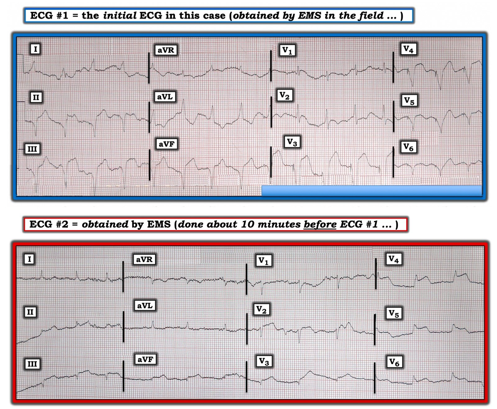
Hình 2: So sánh điện tâm đồ #1 trong ca hôm nay — với một bản ghi không tạo nhịp được ghi tại hiện trường ~10 phút trước đó (Xem phần chữ).
ĐIỂM #5: Các bản ghi liên tiếp thường có giá trị chẩn đoán. Điều này đặc biệt đúng trong ca hôm nay — khi tình trạng khó thở nặng đã gây ra biến thiên hình thái sóng ST-T do nhiễu giữa các nhát.
- Mười phút trước đó — bệnh nhân có nhịp tự thân (không tạo nhịp). Mặc dù khó nhận ra sóng P do nhiễu đường nền trên điện tâm đồ #2 — các bản ghi sau đó tại khoa cấp cứu cho thấy cơ chế nhịp nền là nhịp xoang.
- Mặc dù có điện thế thấp lan tỏa trên điện tâm đồ #2 — mỗi chuyển đạo dưới đều cho thấy ST chênh lên kín đáo nhưng có thật. Chuyển đạo aVL gợi ý ST chênh xuống soi gương còn kín đáo hơn.
- ST chênh lên tối cấp rõ ràng thấy ở các chuyển đạo V4 và V5 của điện tâm đồ #2. Nhìn kỹ — ST chênh lên dường như bắt đầu từ các chuyển đạo V2 và V3 — và kéo dài đến tận chuyển đạo V6.
- Điện tâm đồ #2 có giá trị chẩn đoán OMI dưới-trước-bên cấp do tắc LAD cấp kèm “vòng qua mỏm” (wraparound).
ĐIỂM CUỐI CÙNG: Hãy NHÌN LẠI MỘT LẦN NỮA cả hai bản ghi trong Hình 2.
- Thật bổ ích khi so sánh hình ảnh sóng ST-T tạo nhịp theo từng chuyển đạo (trên điện tâm đồ #1) — với hình ảnh sóng ST-T ở chính các chuyển đạo đó khi không có tạo nhịp thất (trên điện tâm đồ #2). Tôi hy vọng việc làm này sẽ giúp nhận biết rõ hơn những dấu hiệu sóng ST-T định tính cần tìm vào lần tới khi bạn gặp một bản ghi tạo nhịp ở bệnh nhân có triệu chứng mới.
Xin CẢM ƠN Dr. Brooks Walsh đã trình bày ca bệnh rất sâu sắc này!